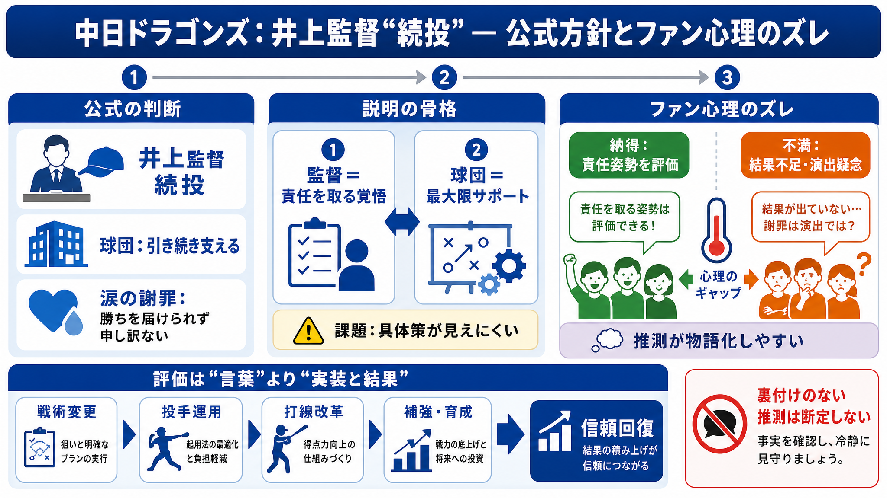

y܁zRy}Ci[z
| ЂƂ育@2026N613 8:00 ECŏĂŖA E**AjT}2026A10()ɂ炢IA11(y)ɍˁA12()ɃACh}X^[ VCj[J[Y C~l[VX^[YADOES̏oI** @ȂōNAjT}ɃuCuƃAC}X…

成績不振の局面では「意思決定」が話題化しやすい。
前提①（ぜんてい）=前提条件
幹部の会見で方針が言語化されると、噂や推測も広がりやすい。
前提②（ぜんてい）=前提条件
引き続き井上監督を支援（支える=サポート）。
運営のブレを減らす一方、「結果が出ないのに？」の余地も残る。
成績不振なら責任を取る覚悟。
覚悟で戦うなら、最大パフォーマンスが出るよう支える。
勝ちを届けられず“申し訳ない”。
来週から一体で戦う。
責任の姿勢や支援方針を、前向きに読む。
謝罪や涙を“演出”と疑い、結果不足を責める。
「北海道で三者会談した意味」など。
意思決定の根拠が“検証不能な物語”として広がる。
監督＝覚悟（姿勢の説明）。
球団＝支援（支えると宣言）。
具体施策（投手運用/打線/育成/補強/戦術）の提示。
涙の誠意が“結果に結びつく説明”に見えない可能性。
続投根拠が抽象的だと“感情だけ”に見える。
Critical（ひはんてき）=批判的視点
戦術・編成・コーチ体制などの変更が鍵。
Practical（じつむてき）=実務的視点
結果が出ないままの続投＝信頼低下。
Risk（りすく）=リスク
推測に基づく断定は危険、一次情報の補完待ち。
Skeptical（ふあんてき）=懐疑的
球団本部長の発言（朝田憲祐氏）／監督の「責任の覚悟」発言。
コメント欄の推測（会談の意味・場所など）は裏付けがないため断定不可。
| ЂƂ育@2026N613 8:00 ECŏĂŖA E**AjT}2026A10()ɂ炢IA11(y)ɍˁA12()ɃACh}X^[ VCj[J[Y C~l[VX^[YADOES̏oI** @ȂōNAjT}ɃuCuƃAC}X…
だが、今季無失点の5番手の草加がその裏、1死走者なしから水野にサヨナラ本塁打を浴びた。 井上監督は「最終的にサヨナラホームランを打たれてしまったが
中日草加投手、サヨナラホームラン打たれてマウンドで無き崩れる. サイト. なん ... サヨナラホームランで泣き崩れる草加・・・ 井上監督やはり解任か. サイト. なんJ
# 中日、連敗で借金ワースト『17』 11回2死満塁での細川のまさかのプレーに井上監督「あってはならないプレー」と怒り隠せず. ## NEWS. 中日・井上監督「切り札の阿部を残して終わるのが嫌だった」リスクある中での勝負手で同点につなげた…
中日・井上監督、今季ワーストの借金『15』で交流戦「総括とか言える立場でもない」. 2026年5月24日 18時07分